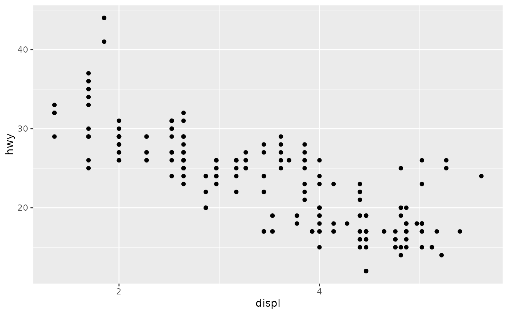
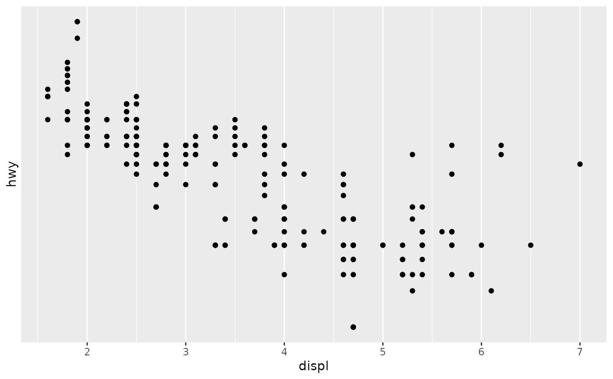

These functions are wrappers for scale_x_log10, etc., that specify axis tick labels as powers of 10 and powers of 2 with default nice format or easy scientific notation.
scale_x_log2nice(
name = ggplot2::waiver(),
omag = seq(-10, 10),
scilabels = FALSE,
...
)
scale_x_log10nice(
name = ggplot2::waiver(),
omag = seq(-10, 10),
scilabels = FALSE,
...
)
scale_y_log2nice(
name = ggplot2::waiver(),
omag = seq(-10, 10),
scilabels = FALSE,
...
)
scale_y_log10nice(
name = ggplot2::waiver(),
omag = seq(-10, 10),
scilabels = FALSE,
...
)
scale_loglog10(...)axis name.
orders of magnitude or fold-changes for axis labels, usually an integer sequence.
display labels in scientific format, e.g. \(10^2\) vs 100.
other arguments to continuous_scale().
a ggproto object as output by continuous_scale().
scale_x_log2nice: plot x axis on log2-scale with nice defaults
scale_x_log10nice: plot x axis on log10-scale with nice defaults
scale_y_log2nice: plot y axis on log2-scale with nice defaults
scale_y_log10nice: plot y axis on log10-scale with nice defaults
scale_loglog10: plot x AND y axes on log10-scale with nice defaults
library(ggplot2)
# create example plot with ggplot2 dataset
p1 <- ggplot(mpg, aes(displ, hwy)) +
geom_point()
p1 + scale_x_log2nice()

p1 + scale_y_log10nice()
